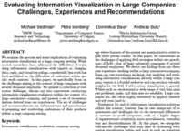

Evaluating Information Visualization in Large Companies: Challenges, Experiences and Recommendations


Venue. CHI BELIV (2010)
Abstract. We examine the process and some implications of evaluating information visualization in a large company setting. While several researchers have addressed the difficulties of evaluating information visualizations with regards to changing data, tasks, and visual encodings, considerably less work has been published on the difficulties of evaluation within specific work contexts. In this paper, we specifically focus on the challenges arising in the context of large companies with several thousand employees. We present a collection of evaluation challenges, discuss our own experiences conducting information visualization evaluation within the context of a large automotive company, and present a set of recommendations derived from our experiences. The set of challenges and recommendations can aid researchers and practitioners in preparing and conducting evaluations of their products within a large company setting.
Received a best paper award

Link to this page: